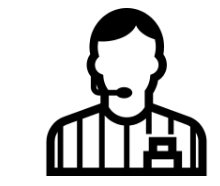

<!--
  Generated template for the LoginPage page.

  See http://ionicframework.com/docs/components/#navigation for more info on
  Ionic pages and navigation.
-->
<ion-header>
  <ion-navbar color = "capota">
      <ion-title>Login</ion-title>  
  </ion-navbar>
   
  <br>
  <br>
  <button ion-button color="light" round>Iniciar Sesión</button>
  <button ion-button round>Primary Round</button>
  <br>
  <button ion-button block  >Registrarse</button>
  
</ion-header>

<ion-content padding center  text-center>
  
  
  <ion-list>
    <ion-item>
      <ion-label floating>Usuario:</ion-label>
      <ion-input type="text"></ion-input>
    </ion-item>
    <ion-item>
        <ion-label floating>Contraseña:</ion-label>
        <ion-input type="password"></ion-input>
    </ion-item>
  </ion-list>

  <button ion-button outline item-end icon-start color="capota" (click)="irHomeAdmin()" round >Iniciar Sesion</button>
  <button ion-button outline item-end icon-start color="capota"(click)="irRegistro()" round>Registrarse</button>
</ion-content>  